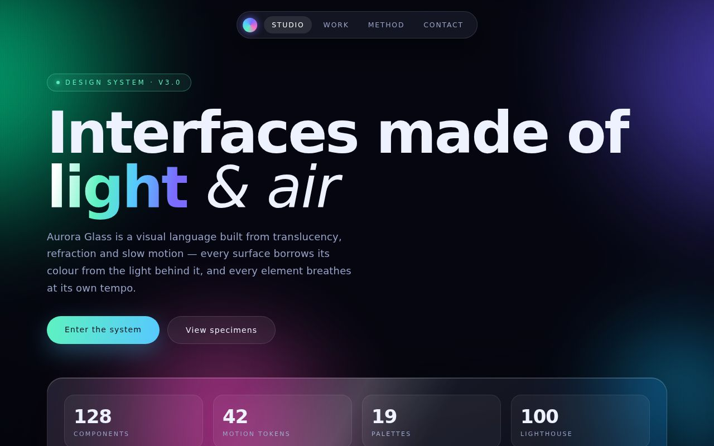

Aurora Glass — Luminous Translucent Design System
The page should feel like standing behind a sheet of hand-polished glass at night while coloured searchlights move somewhere beyond it — expensive, calm and weightless. The composition is a centred editorial column: navigation pill, eyebrow badge, giant two-line headline, lede paragraph, two pill buttons, a wide frosted stat card, and a three-card grid, all layered above a living aurora field. Depth comes from stacked blur, saturation and inset light rather than drop shadows alone, and the accent colours are used sparingly so the glass and the typography remain the luxury signals.